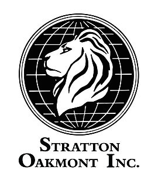

InvestorScope
A seamless, intuitive way for amateur investors
to discover new investment opportunities.
TODO list team members
The Team
TODO make a logo
TODO short compelling desc. of project
Task Analysis & Conceptual Inquiry
Report
Presentation
Concept Video
Concept Video
Report
Lo-fi Prototype & Test
Report
Presentation
Medium-fi Prototype
Report
Presentation
Prototype